VANE PUMP > DISASSEMBLY |
| 1. SECURE VANE PUMP ASSEMBLY |
| 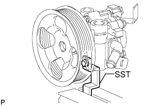 |
Using SST, secure the vane pump in a vise.
| 2. REMOVE SUCTION PORT UNION |
| 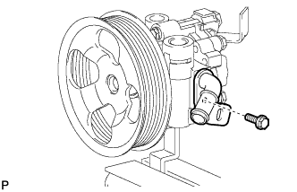 |
Remove the bolt and suction port union from the vane pump.
Using a screwdriver, remove the O-ring from the suction port union.
| 3. REMOVE PUMP REAR BRACKET |
| 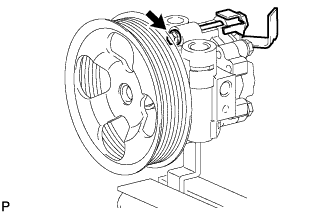 |
Remove the bolt and bracket.
| 4. REMOVE PRESSURE FEED TUBE |
Remove the union bolt and pressure tube.
| 5. REMOVE PRESSURE PORT UNION |
Remove the pressure port union and O-ring.
| 6. REMOVE VANE PUMP REAR HOUSING |
| 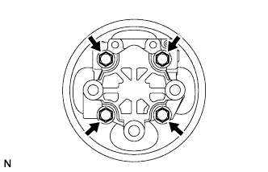 |
Remove the 4 bolts and vane pump rear housing from the vane pump front housing.
| 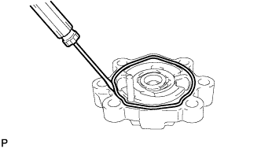 |
Using a screwdriver, remove the O-ring from the vane pump rear housing.
| 7. REMOVE VANE PUMP SHAFT WITH PULLEY |
| 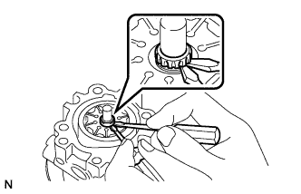 |
Using 2 screwdrivers, remove the snap ring from the vane pump shaft.
Remove the vane pump shaft with pulley.
| 8. REMOVE VANE PUMP ROTOR |
| 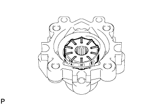 |
Remove the 10 vane pump plates.
Remove the vane pump rotor from the vane pump front housing.
| 9. REMOVE VANE PUMP CAM RING |
| 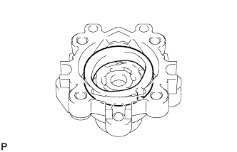 |
Remove the cam ring from the vane pump front housing.
| 10. REMOVE VANE PUMP FRONT SIDE PLATE |
| 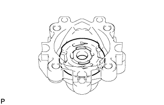 |
Remove the front side plate from the vane pump front housing.
| 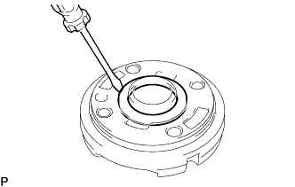 |
Using a screwdriver, remove the O-ring from the front side plate.
| 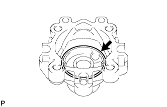 |
Remove the O-ring from the vane pump front housing.
| 11. REMOVE VANE PUMP HOUSING OIL SEAL |
| 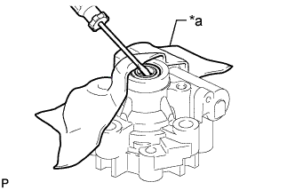 |
Using a screwdriver and piece of cloth, pry out the oil seal.
| *a | Cloth |